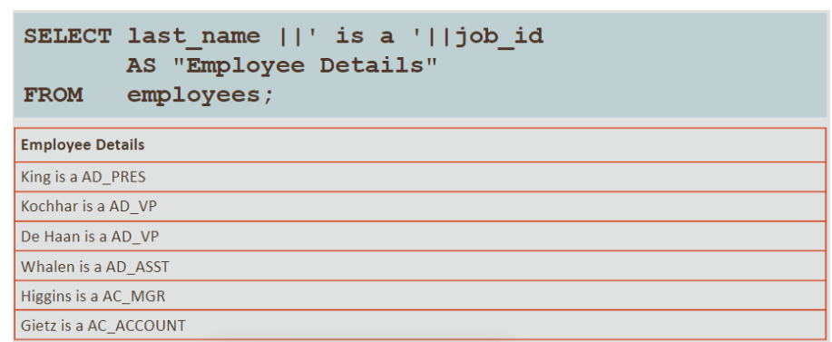
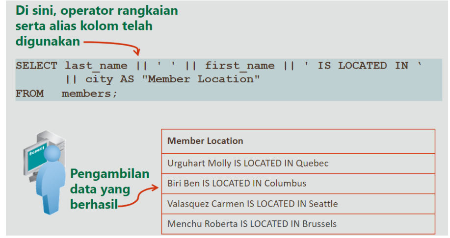

SQL - SELECT
Statement SELECT dasar
- SELECT mengidentifikasi kolom yang akan ditampilkan
- FROM mengidentifikasi tabel yang berisi kolom tersebut
Memilih Semua Kolom
- Semua kolom tabel dapat ditampilkan dengan menempatkan * setelah kata kunci SELECT
Memilih Kolom Spesifik - Proyeksi
- Anda dapat menggunakan pernyataan SELECT untuk menampilkan kolom tertentu dari tabel dengan menunjukkan nama kolom sesuai urutan yang ingin anda lihat, dipisahkan dengan koma
Menulis Statement SQL
- Dengan menggunakan aturan dan panduan sederhana yang ditunjukkan di bawah ini, anda dapat Menyusun pernyataan yang valid yang mudah dibaca dan diedit
- Statement SQL tidak peka huruf besar/kecil
- Statement SQL dapat dimasukkan pada satu baris atau lebih
- Kata kunci tidak dapat disingkat atau dipisah barisnya dan biasanya dieja dengan huruf besar
- Klausa biasanya ditempatkan pada baris terpisah
- Indent digunakan untuk meningkatkan keterbacaan
- Di Application Express, pernyataan SQL dapat dihentikan dengan titik koma (;) namun tidak wajib
Skenario Kasus: Mengambil Data
Ekspresi Artimatika
- Buat Ekspresi dengan data angka dan tanggal dengan menggunakan operator aritmatika
- Nama kolom, konstanta numerik, dan operator aritmatika dapat digunakan dalam ekspresi aritmatika
- Operator aritmatika dapat digunakan dalam klausa pernyataan SQL kecuali FROM
Menggunakan Operator Aritmatika
- Disini, operator penambahan digunakan untuk menghitung kenaikan gaji sebesar $300 untuk semua Karyawan
- SALARY+300 ditampilkan sebagai Judul Kolom
Pendahulu Operator
- Gunakan tanda kurung untuk menegaskan urutan standar pendahulu dan untuk meningkatkan kejelasan
- Anda dapat mengabaikan aturan pendahulu dengan menggunakan tanda kurung untuk menentukan urutan penjabaran operator
Menentukan nilai Null
- Null adalah nilai yang tidak tersedia, tidak ditetapkan, tidak diketahui, atau tidak berlaku
- Null tidak sama dengan nol atau spasi kosong
Nilai Null dalam Ekspresi Aritmatika
- Ekspresi Aritmatika yang berisi nilai Null akan dievaluasi ke Null
Menentukan alias kolom
- Alias kolom
- Mengganti nama kolom judul
- Berguna dengan penghitungan
- Segera mengikuti nama kolom (dapat juga kata kunci AS opsional antara nama kolom dan alias)
- Memerlukan tanda kutip ganda jika berisi spasi atau karakter khusus, atau jika peka huruf besar/kecil, defaultnya semua adalah huruf besar
Menggunakan Alias Kolom
- Kata Kunci AS bersifat opsional
- Nama kolom muncul dalam huruf besar secara default
- Nama kolom yang disertakan dalam tanda kurung akan muncul saat dimasukkan
Operator Rangkaian
- Menautkan kolom atau string karakter ke kolom lain
- Dinyatakan dengan 2 bilah vertical (||)
- Membuat kolom yang merupakan ekspresi karakter
String Karakter Literal
- Literal adalah karakter, angka, atau tanggal yang disertakan dalam pernyataan SELECT
- Nilai literal Tanggal dan karakter harus ditutup dengan tanda kutip tunggal
- Setiap string karakter akan dikeluarkan sekali untuk setiap baris yang dihasilkan
Menggunakan String Karakter Literal
- Dalam contoh, last name dan job_id untuk setiap Karyawan digabungkan dengan literal agar baris yang dihasilkan lebih bermakna

Operator Penawaran (q) Alternatif
- Banyak pernyataan SQL menggunakan literal karakter dalam ekspresi atau kondisi
- Jika literal itu sendiri berisi tanda kutip tunggal, anda dapat menggunakan operator penawaran (q) dan memilih sendiri pemisah tanda kutip – dalam tanda kurung kotak ini []
Skenario Kasus: Menggunakan Alias Kolom
Skenario Kasus: Menggunakan Pernyataan SELECT

Baris Duplikat
Menampilan Struktur Tabel
- Gunakan perintah DESCRIBE untuk menampilkan struktur tabel, termasuk nama kolom, jenis data, dan nullabilitas
- Atau, pilih APEX Object Browser dalam SQL Workshop untuk melihat struktur tabel
- Anda juga dapat mengeklik tombol Find Tables pada APEX SQL Commands untuk melihat struktur tabel
Menggunakan Perintah Describe